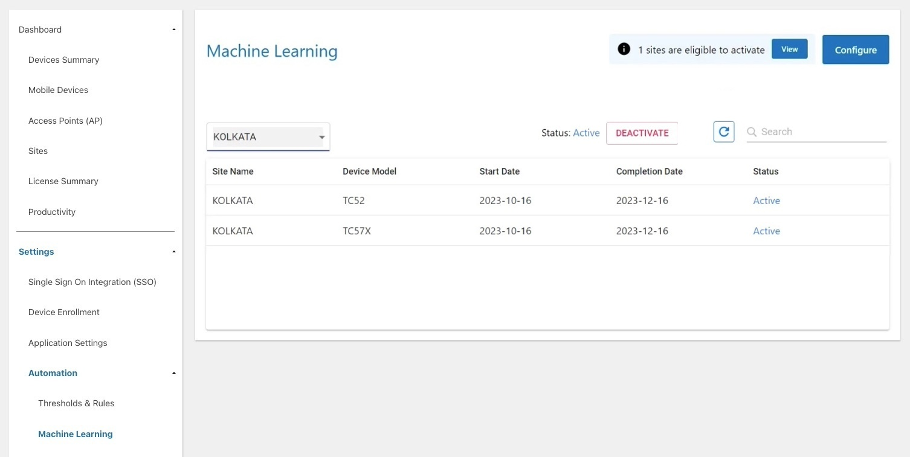
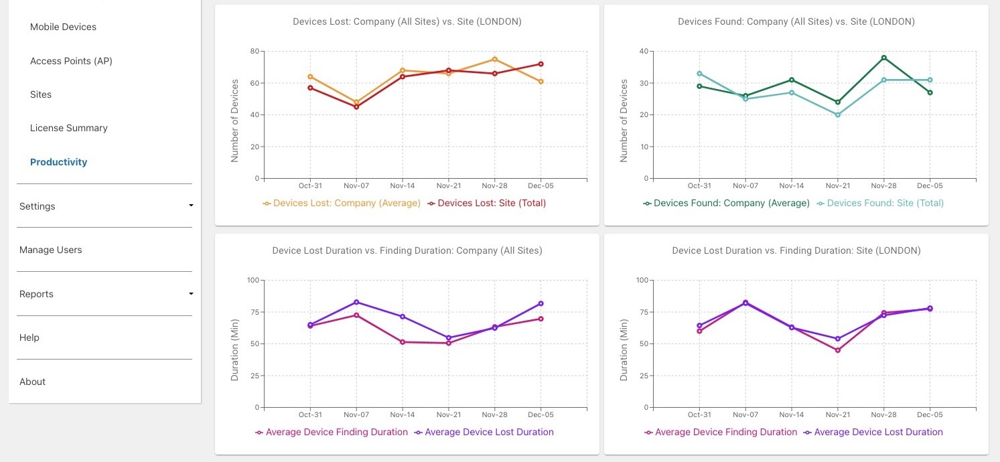
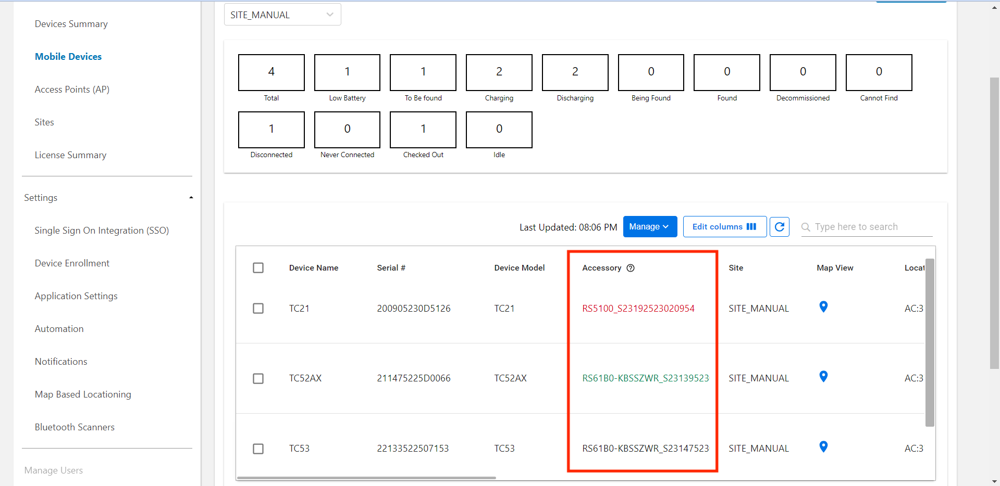
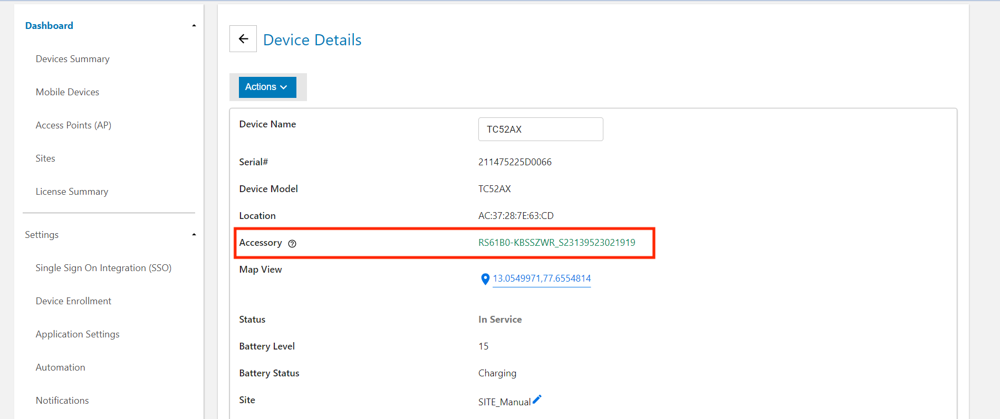
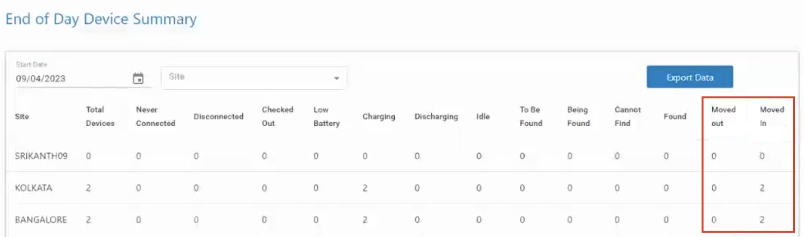

Overview
Device Tracker is a cloud-based scalable solution that makes it easy to track and recover lost or misplaced devices, preventing device inventory shrinkage. No additional hardware is required - leverage existing Wi-Fi network infrastructure along with Bluetooth and audio to locate devices. When locating a device, Device Tracker identifies the general vicinity of the lost device based on the Access Point (AP) it is connected to within the facility. The visual proximity indicator shows in real-time how close or far the lost device is located, relying on Bluetooth beacon transmissions. If the device is not within line-of-site, an alarm can be remotely triggered on the device to further determine its precise location.
Learn about Getting Started with Device Tracker.
Video: Overview of Device Tracker
Main Features
Main features of Device Tracker:
- Cloud-based scalable solution hosted and maintained by Zebra with support for up to 100K devices in multiple locations.
- Support for central administrator, site manager, and site associate roles.
- The web portal provides a corporate-level dashboard for administrators and site-level dashboard for managers to monitor and track devices.
- Registration of:
- Sites and access points with friendly names to easily identify device location.
- Devices to assigned site with user friendly names for simple device identification.
- Simple to deploy – install and configure the mobile application using StageNow and Enterprise Mobility Management tools.
- Easily find a misplaced device with the connected AP location, the Bluetooth-based visual proximity indicator and play sound feature.
- Locate a device even when that device is powered off (for a limited time) if it has secondary Bluetooth Low Energy (BLE) beaconing capability.
- Checkout feature to associate users to devices for accountability.
- Single Sign On (SSO) support for users to be authenticated with their SSO credentials for device access and for administrators and managers to gain access to their respective dashboards.
- Generate reports to monitor device performance, user activity and site activity.
- Automate workflows to ease the process of finding and tracking devices.
- Automatically receive notifications from lost devices in close proximity via audio, vibrating or LED alerts.
- Locate devices based on GPS coordinates and pinpoint device location on a map.
- Track and locate Bluetooth scanners. Optionally, Virtual Tethering warns users when a paired Bluetooth scanner approaches the edge of the Bluetooth range from its connected host device.
Important Notes
- When a Zebra Android 13 or Android 11 device with file-based encryption (FBE) is secured with a PIN, password, or pattern lock, it will not connect or communicate with the server for the first time after a reboot until the user unlocks the device. As a result, the device cannot be tracked while it is locked. Once the device is unlocked after rebooting, tracking resumes and the device operates normally, even when it's relocked with a PIN, password, or pattern. This issue arises due to the Firebase Authentication API used by the server, which does not activate until the device is unlocked by the user. To ensure the device functions properly after a reboot, the device can be configured with either a swipe lock or without any lock. This allows the app to continue operating after the device reboots.
- In rare cases, the Device Tracker web portal may not logout automatically after a period of inactivity. If this occurs, performing any action in the web portal results in unauthorized access error 401. The user must re-login to recover.
New in Device Tracker 6.2
- Introduced Machine Learning, which analyzes device usage patterns and applies predictive analytics to identify devices "at risk" of becoming lost, aiming to prevent potential device loss.
- The status of devices identified "At Risk" changes based on user interaction. When the user acknowledges the "At Risk" notification, the device is flagged as active and its status changes to "In Service." If the user does not respond to the notification, the device is assumed to be lost. It is then flagged for recovery and its status is changed to "To Be Found."
- The “At Risk” device status is visible in the Mobile Devices dashboard, Events By Site report and End of Day Device Summary report. 
- Resolved Issues:
- Disconnected devices now report the proper time in the "Last Reported" column in the web portal.
- Known Issues:
- When accessing the portal using Single Sign-On (SSO), the Passcode section takes longer than normal to load values.
- If Enterprise Keyboard is set as the input method on the device, it prevents the entry of numeric values during a keyword search by device name.
Version History
New in Device Tracker 6.1
- Introduced the new Productivity Dashboard, which displays a graphical representation of the number of lost and found devices, the average duration devices remain lost and the average recovery time for devices. This provides a quick overview of Device Tracker's efficiency in tracking and locating devices, especially when contrasting the metrics of a single site against those at a company-wide level. 
- The paired Bluetooth scanner and its connection state is now displayed in the Mobile Devices dashboard and device details screen in the web portal. The accessory connection state in relation to the associated mobile device is indicated by the colored text: green (accessory is paired and connected), red (accessory is paired but disconnected), black (accessory was previously paired and connected).

Mobile Devices dashboard
 Device details - Managers and administrators can now opt to receive daily End of Day email reports on connected accessories and their associated devices.
- Connected Accessories report option is now available when managing sites.
- Resolved Issues:
- Fixed a UI issue where the value in the “Last User” column overlapped with the value in the “Status” column in the Mobile Devices dashboard in the web portal.
- When licenses are renewed before expiration, the web portal now displays an accurate license count.
- Known Issue: When accessing the portal using Single Sign-On (SSO), the Passcode section takes longer than normal to load values.
New in Device Tracker 6.0
- Now tracks and locates Bluetooth scanners, with support for Zebra RS5100 ring scanners and RS6100 wearable scanners.
Required firmware:- RS5100 - Firmware CAAEXS00-005-R00 or later
- RS6100 - Firmware CAAFYS00-002-R04 or later
New features require the Oct. 2023 Android 11 LifeGuard Update (or later)
- Virtual Tethering option warns users when a paired Bluetooth scanner approaches the edge of the Bluetooth range from its connected host device. Accessory licenses and a firmware update are required for these Bluetooth scanners.
- Events By Site report is enhanced to generate reports at 3:00 a.m. based on local site time zone, rather than 3:00 a.m. in the Central Time Zone.
- Adds “Last User” column on the Mobile Device dashboard, showing the last known user to check out the device.
- Resolved Issues:
- When Checkin/Checkout is enabled, the user name is now consistently cleared in the "Checked Out By" field from the web portal after a device is inserted into a charging cradle.
- Devices are no longer set "To Be Found" when a device that reached the idle threshold is removed from the charging cradle and both the following conditions are met:
- Checkin/Checkout is enabled
- Any automation rule that includes "not charging" is selected under "Automatically Mark Devices To Be Found"
- Fixed issue where the checkout screen was intermittently not appearing after device reboot when using SOTI MobiControl EMM (Enterprise Mobility Management) in lockdown mode.
- Known Issues:
- When accessing the portal using single sign-on (SSO), the Passcode section takes longer than normal to load values.
- When licenses are renewed before expiration, the web portal displays an inaccurate license count.
New in Device Tracker 5.7
Events By Site report has been enhanced to now show device movement in and out of sites. Admins and managers can track device allocation across sites, including when a device movement occurred, the previous site the device was located, and the site where the device is currently located.

Managers can now access Events By Site reports for their designated site in the web portal.
Resolved Issues:
- In the Mobile Devices dashboard from the web portal, the device count shown in the Charging, Discharging, and Disconnected tiles no longer include decommissioned devices.
- Site names containing only numbers are now valid when creating sites through CSV file upload.
Known Issues:
- When accessing the portal using single sign-on (SSO), the Passcode section takes longer than normal to load values.
- When licenses are renewed before expiration, the web portal displays an inaccurate license count.
New in Device Tracker 5.6
New option for managers to receive End of Day Device Summary reports of device movement between sites via email. This setting is configured by administrators when adding a site either manually or via .CSV file. 
The web portal dashboard now shows time stamps in their respective local time zones, rather than in GMT.
The Mobile Devices dashboard now features a new column named “Last Check In,” showing the elapsed time since the device’s most recent check-in.

The Device Checkin Option is renamed from "Device API" to "App API."
Resolved Issues:
- When a tile was selected to filter devices on the Devices Summary screen in the web portal, the displayed result directed to the Mobile Devices screen instead of showing the relevant selected filter.
- When displaying the Device Details screen in the web portal, the site location of the device was not included in the list, consequently hindering the capability to assign the device to a site.
- Enabling Single Sign-On (SSO) with Defined Roles prevented the ability to export data from Access Points (AP), Mobile Devices and Sites in the web portal.
- When a device was recommissioned (after being decommissioned), the device remained unassigned to a site (even if previously assigned to a site) until the user checked out the device through Enterprise Login Screen (ELS).
Known Issues:
- When accessing the portal using single sign-on (SSO), the Passcode section takes longer than normal to load values.
New in Device Tracker 5.5
- Now supports Zebra devices running Android 13.
- Administrators can now download XML and barcode files for device enrollment.
- Enrollment files are still emailed as part of Zebra’s on-boarding process.
NOTE: Separate barcodes must be used for devices running Android 13 (or later) and Android 11 (or earlier); the XML files are supported by any Android version. - Allows administrators to select an on-device sound file when using Play Sound feature from the portal:
 Click image to enlarge; ESC to exit.
Click image to enlarge; ESC to exit.
- Allows admins to arrange and save columns in the portal according to user preference:
 Click image to enlarge; ESC to exit.
Click image to enlarge; ESC to exit.
- Now can update device name, site and in-line notes from device details page.
- A “Welcome” email with access instructions is now sent to newly added users.
- Resolved Issues:
- On systems using SSO, the “Checked Out By” field value is now being updated when a user logs in using Enterprise Login Screen (ELS) without the Device Tracker application running.
- Known Issues:
- When accessing the portal using single sign-on (SSO), the Passcode section takes longer than normal to load values.
- When a device is recommissioned (after being decommissioned), the device remains unassigned to a site (even if previously assigned to a site) until the user checks out the device through ELS.
Zebra recommends updating devices to the latest client to receive critical issue fixes and new features. Device Tracker Cloud Server 5.5 is backward-compatible with client version 5.3 and later.
New in Device Tracker 5.4
- Adjust the tone, volume, duration and interval of the sound emitted when activating the Play Sound function to locate misplaced devices.
- GPS Locationing is renamed to Map Based Locationing.
- Resolved Issues:
- When Lost Device Nearby notifications are enabled, detecting more than 10 nearby devices in the beaconing state causes the client application to crash.
- When selecting a tile to filter devices in the web portal, the chosen filter and the corresponding list of devices were not preserved when switching between views in the dashboard.
- In the web portal, when switching from Automatically assign devices to a connected AP’s site to IP Address Range Configuration under Registration, it prevented the ability to add/modify sites using CSV file import.
- There was an intermittent issue in the reports where the Found device count may display a higher value than the To be found device count.
- Known issues:
- In the web portal, when switching from IP Address Range Configuration to Automatically assign devices to a connected AP’s site under Registration, it requires the device to be rebooted.
- When accessing the SSO setting in the web portal, the Passcode section takes a few seconds to load the values.
- When a device is recommissioned (after being decommissioned), the device remains unassigned to a site (even if previously assigned to a site) until the user checks out the device through Enterprise Login Screen.
New in Device Tracker 5.3
Note: Both server and client must be upgraded to Device Tracker 5.3 to ensure compatibility of Device Tracker features.
- Locate devices based on GPS coordinates and pinpoint device location on a map.
- Automatic device assignment to a site based on a specified range of IP addresses (IPV4) when a device connects to the network
- New SSO login screen, aka Enterprise Login Screen (pre-release), ensures secure device access by requiring user authentication and device checkout using SSO login credentials, enforcing accountability. Login bypass allows a user to gain device access in unexpected situations when SSO login cannot occur.
- Device Tracker support for SSO OAuth 2.0 with client authentication type None with PKCE
- Device Tracker dashboard access based on SSO response parameters (such as Active Directory group name, job ID, and site location)
- Enhanced End of Day snapshot email report for administrators to customize reported data based on criteria selected; see Manage Sites to configure site reporting
- Enhanced events report for administrators to analyze events and view event details, including detailed device information, identification of manual vs automatic events, total and average amount of time provided for devices in "Being Found" or "To Be Found" state, and ability to export device detail information as a CSV file
- Automatic clearing of the “To Be Found” status upon device checkout. If a device is in the “To Be Found” state when it is checked out, it is automatically set back “In Service” (rather than remaining in the “To Be Found” state).
- API to integrate device checkin with a Line of Business (LOB) application to simplify the user device checkin workflow. See Device Checkin Options.
- Automatically checkin devices after reaching the maximum checkout time. Force Checkin automatically checks in the user when the Maximum Checkout Time is reached. If a Snooze Time is specified, it extends the maximum checkout time to allow the user to complete their task. This applies when SSO is in use with Enterprise Login Screen.
- Register location friendly name for the Access Point (AP) with a wildcard.. A wildcard character "*" is now acceptable for the last digit of the last octet of the MAC address to register multiple APs which share the same MAC address aside from the last digit.
- New feature for managers and admins to Play Sound through the device actions menu in the web portal.
- Resolved issues:
- After a device is rebooted and then idle for a long period of time without being unlocked, the device may be shown as disconnected.
- Intermittently, a user may be unable to checkout a device by scanning a barcode.
- Known issues:
- When accessing the SSO setting in the web portal, the Passcode section takes a few seconds to load the values.
- When a device is recommissioned (after being decommissioned), the device remains unassigned to a site (even if previously assigned to a site) until the user checks out the device through Enterprise Login Screen.
New in Device Tracker 5.2
- New feature to automatically detect Lost Devices Nearby. When any device is in close proximity to a lost device, alert notifications (audio, vibration, LED or notification message) are received and further action can be taken to recover the lost device.
New in Device Tracker 5.1
- The web portal now provides a dashboard for administrators and managers to monitor and track devices.
- Administrators can now manage devices, access points and sites through the web portal either manually or by uploading the data via .CSV file.
- New Single Sign On (SSO) OAuth 2.0 support.
- Add SSO users for admin or manager access to the web portal through Manage Users.
- New reporting features:
- Site Data Report - generate reports on demand showing daily device event counts based on site.
- End of Day Report - generate a snapshot report showing device summary and checked out devices at the end of the day with the option to email the report to recipients.
- New capability to assign a manager to a site when creating a new user.
- Limitation: If upgrading from Device Tracker 5.0 or lower, sites imported via .CSV file on the device must be updated with the local time zone information in order for the new data reporting features to work.
- Deprecated Feature: .CSV file import through the device client app for device, access point and site registration is deprecated. Starting with v5.1, Zebra recommends to import the .CSV file through the web portal.
New in Device Tracker 5.0
- New automation feature to automatically set devices to certain states depending on the thresholds reached or configurations selected to ease the process of finding and tracking devices.
- Now automatically assign a device to a known site based on its connected access point (AP) with automatic device registration.
- New Device Checkin Options to select the method of checkin: manual, cradle, or reboot.
- New capability to play an audio alert if Do Not Disturb (DND) is enabled on the lost device being tracked.
New in Device Tracker 4.2
- Device Tracker now supports TC52AX and MC33AX and their optional battery-based BLE enabling Device Tracker to locate the device when powered off.
- Eliminated the need to allow
*.google.comthrough the firewall or proxy. See Network Requirements. - Added support for Android 11 devices. See Device Compatibility.
- Fixed an intermittent issue when a user is unable to scan a barcode to checkout the device.
- Known Behavior: During a Google Play Services update, the Device Tracker app gets closed. Relaunch the Device Tracker app or reboot the device to continue tracking of the device.
New in Device Tracker 4.1
- Locate a device even when that device is powered off (for a limited time) if it has secondary BLE beaconing capability.
- New device support for EC50. See Supported Devices.
- Added support to silently deploy Device Tracker on mobile devices using EMM and StageNow, allowing uninterrupted device operation for the end user (if Checkout is not enabled).
- Administrator or manager can scan a barcode for user name and password during login, eliminating manual entry.
- Resolved Issues:
- After repeatedly launching Device Tracker over several weeks without rebooting the device, the app may become unresponsive.
- When there are multiple pools of licenses with different expiration dates, an incorrect license count is reported after the licenses expire.
- Known Issue: When installing the application on a mobile device using an EMM, some EMMs may not have implemented the Zebra value-added features for seamless deployment. Alternatively, an XML file can be generated from the StageNow profile and consumed by the EMM for seamless deployment. Refer to the Install & Setup guide.